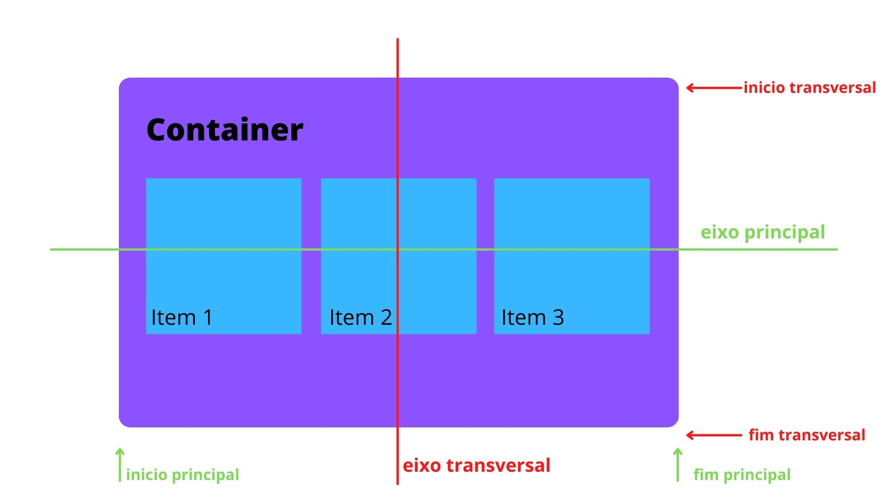
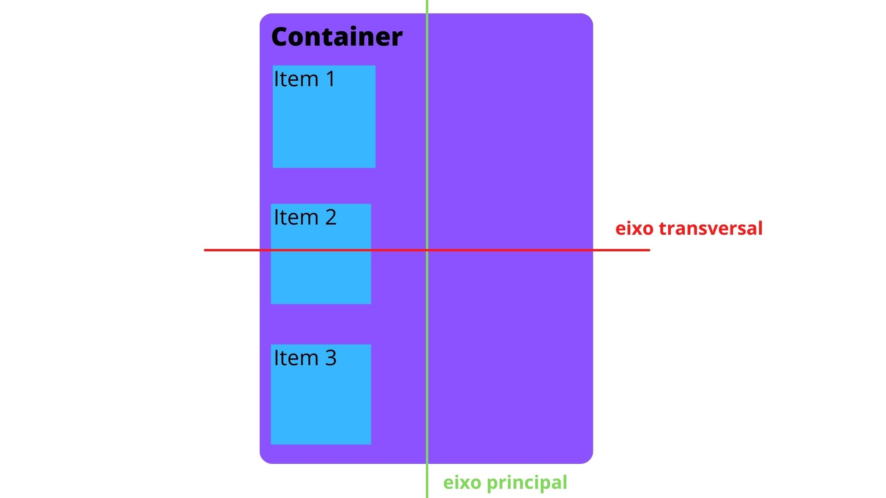

Flexbox
flex : é um módulo do CSS que oferece um método eficiente para organizar e alinhar elementos em um contêiner, permitindo que eles se adaptem a diferentes tamanhos de ecrã de forma flexível, seja em linhas ou colunas.
Existem dois eixos no flex, o transversal e o principal:


-
Eixo principal (main axis): É o eixo definido pela propriedade flex-direction. Por padrão, é horizontal (da
esquerda para a direita)
-
Eixo transversal (cross axis): É perpendicular ao eixo principal. Se o eixo principal é horizontal, o transversal é vertical, e vice-versa.
-
Os itens flexíveis são organizados ao longo do eixo principal, e o alinhamento adicional pode ser feito ao
longo do eixo transversal usando propriedades como align-items e align-content.